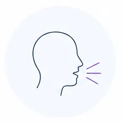
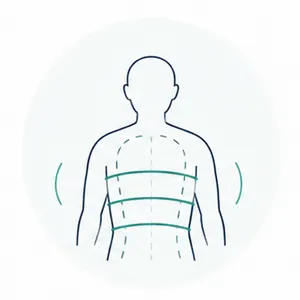
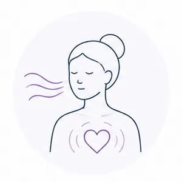
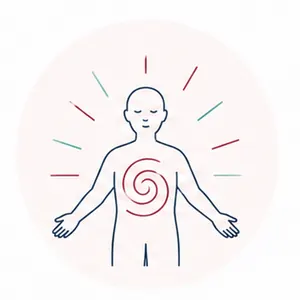
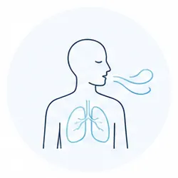
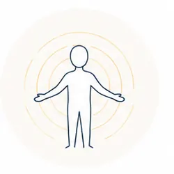
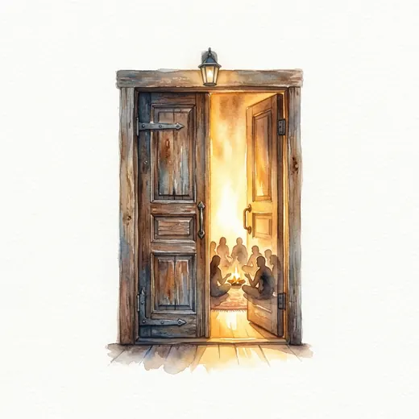

Gyvenimas vyksta galvoje
Iš išorės funkcionuojame, bet kūnas kalba įtampa, nuovargiu, paviršutinišku kvėpavimu ir nerimu.
Pulsacijos.lt
Liepos 31 - rugpjūčio 2 d. · Vilnius
3 dienų Pulsacijų seminaras tiems, kurie nori atlaisvinti kūne sukauptą įtampą, sugrįžti į gyvybingumą ir stipresnį ryšį su savimi.
Pulsacijos - tai kūno, kvėpavimo ir emocinės išraiškos metodas, padedantis pamažu paleisti įtampą, kurią ilgai laikėme pečiuose, krūtinėje, pilve ar kvėpavime.
Per daugiau nei 40 metų praktikos Pulsacijos yra vienas efektyviausių mano sutiktų metodų.
Olegas Lapinas
Atpažinimas
Dirbate. Bendraujate. Šypsotės. Funkcionuojate.
Bet kūnas gali pasakoti kitą istoriją: įtempti pečiai, suspaustas pilvas, sunkumas krūtinėje, paviršutiniškas kvėpavimas, nuovargis, nerimas, mažai energijos.
Kartais atrodo, kad gyvenimas vyksta galvoje, o kūnas liko kažkur nuošalyje.

Kam skirta
daug gyvenate „galvoje“ ir sunkiai jaučiate kūną;
pavargote nuo kontrolės, įtampos ir susilaikymo;
kūne kaupiasi lėtinė įtampa, o įprastas poilsis nebeatstato;
norite daugiau gyvybingumo, jautrumo ir spontaniškumo.
Svarbus klausimas
Kūnas labai dažnai prisimena tai, ką protas jau seniai paaiškino. Neišreikštas pyktis, sulaikytas verksmas, baimė ar poreikis būti stipriam gali virsti įtampa, kvėpavimo blokais ir nejautrumu. Pulsacijose mes nebandome žmogaus sulaužyti ar priversti kažką jausti. Mes sukuriame sąlygas kūnui pamažu atleisti tai, ką jis per ilgai laikė.
Olegas Lapinas
Apie metodą
Tai nėra dar viena savęs analizė. Procesas vyksta per kūną: kvėpavimą, emocijų išraišką ir saugią integraciją. Jeigu dar nežinote, ar Pulsacijos jums tinka, rekomenduojame pradėti nuo demo vakaro.
Demo vakaras
Užsiregistruokite į demo vakarą liepos 22 d., 18.30 val. Vilniuje.

Iš išorės funkcionuojame, bet kūnas kalba įtampa, nuovargiu, paviršutinišku kvėpavimu ir nerimu.
Sulaikyti jausmai kaupiasi kaip kvėpavimo blokai, vidinis suspaudimas ir nejautrumas.

Kūnas gauna erdvės paleisti tai, kas buvo sulaikyta, be spaudimo ir skubėjimo.

Įtampa minkštėja, kvėpavimas gilėja, atsiranda daugiau gyvybingumo, jautrumo ir vidinės ramybės.
Procesas
Trys aiškūs etapai, kuriuose kūnas palaipsniui pereina nuo suspaudimo į daugiau gyvybingumo.

1Kvėpavimas pajudina užstrigusią energiją ir pažadina kūno pojūčius.
Saugiai išleidžiame sukauptas emocijas ir įtampą, kurios ilgai neturėjo vietos.

3Išlaisvinta energija tampa gyvybingumu, jautrumu ir vidiniu stabilumu.
Prieš sprendimą
Palikite el. paštą ir gausite paskaitos apie Pulsacijų efektyvumą medžiagą. Tai nėra registracija ir neįpareigoja dalyvauti seminare.
Kas gali vykti viduje
Pulsacijos dažnai prasideda ne nuo ramybės. Kartais pirmiausia iškyla pyktis, džiaugsmas, liūdesys ar katarsis. Tačiau kai kūnui leidžiama kvėpuoti ir jausti, chaosas pamažu įgauna kryptį.
Įtampa minkštėja. Kvėpavimas gilėja. Kūnas tampa jautresnis. Viduje atsiranda daugiau vietos gyvenimui.
Liepos 31 - rugpjūčio 2 d. · Vilnius
Gilesnė kelionė tiems, kurie nori ne tik suprasti, bet ir kūnu patirti, kaip įtampa gali pradėti minkštėti.
Liepos 22 d. · Vilnius
Trumpesnis būdas pajusti metodo principą, susipažinti su atmosfera, užduoti klausimus ir suprasti, ar norite eiti į 3 dienų seminarą.

Kaina
Liepos 22 d. Vilniuje.
Liepos 31 - rugpjūčio 2 d. Vilniuje. Vėliau kaina kils iki 400 €.
Partneriams, draugams ar dviem kartu registruojantis į seminarą.
Dalyvių patirtys
APo Pulsacijų pajutau, kiek daug įtampos laikiau kūne net tada, kai galvoje atrodė, kad viskas kontroliuojama. Atsirado daugiau lengvumo ir aiškumo.
Aistė
TMan buvo svarbu, kad procesas vyko be spaudimo. Galėjau būti tiek, kiek tuo metu galėjau, ir tai sukūrė pasitikėjimą.
Tomas
RLabiausiai nustebino, kad kūnas pats pradėjo rodyti, kur yra susikaupusi įtampa. Tai buvo labai aiški ir kartu jautri patirtis.
Rūta
MPo susitikimo jaučiau daugiau kvėpavimo, daugiau vietos krūtinėje ir daugiau ramybės. Ne euforijos, o tokio paprasto vidinio stabilumo.
Mantas
LPulsacijos padėjo suprasti, kad kai kurių dalykų neįmanoma išspręsti vien mąstymu. Kūnas turi savo kelią į paleidimą.
Laura
DMan patiko Olego vedimas - ramus, aiškus, be perteklinio spaudimo. Jaučiausi saugiai net tada, kai kilo stipresnės emocijos.
Darius
IPo proceso pajutau daugiau gyvybingumo. Tarsi kūne atsirado daugiau šilumos, judesio ir noro būti čia.
Inga
PBuvo labai vertinga pamatyti, kiek daug visko sulaikau: kvėpavimą, balsą, jausmus, norus. Tai nebuvo lengva, bet buvo tikra.
Paulius
MIšėjau su jausmu, kad geriau girdžiu savo kūną. Ne teoriškai, o labai konkrečiai - per kvėpavimą, pojūčius ir vidinę ramybę.
Monika
JMan Pulsacijos buvo kaip susitikimas su savimi be kaukių. Jautru, kartais intensyvu, bet labai žemiška ir prasminga.
Justina
ALabiausiai įsiminė tai, kad chaosas pamažu virto aiškesniu ritmu. Po proceso jaučiau ne išsekimą, o daugiau gyvybės.
Andrius
ETai buvo patirtis, kuri padėjo ne tik suprasti, bet ir kūnu pajusti, kur esu įsitempusi ir ko man iš tikrųjų reikia.
Eglė
Seminarą veda
Olegas Lapinas - daugiau nei 40 metų patirties turintis specialistas ir sertifikuotas Pulsacijų specialistas.
Per savo 40+ metų praktiką Pulsacijos yra vienas veiksmingiausių sutiktų metodų.
Klausimai ir ribos
Ne. Procesas vyksta savanoriškai, savo tempu ir pagal asmenines ribas.
Ne. Tikslas nėra išsikrauti dėl išsikrovimo. Tikslas - atlaisvinti energiją ir ją integruoti.
Procese svarbios ribos, saugumas ir galimybė sustoti. Jei abejojate dėl sveikatos, pasitarkite su gydytoju arba organizatoriais.
Jeigu dar nesate tikri, pradėkite nuo demo vakaro liepos 22 d. Vilniuje.
Ne. Pakanka noro tyrinėti savo kūną ir laikytis saugumo ribų.
Demo vakaras yra įžanga. 3 dienų seminaras leidžia pereiti gilesnį procesą ir integraciją.
Pulsacijos yra intensyvus kūno ir emocinis procesas. Jis gali netikti nėštumo metu, turint rimtų širdies ir kraujagyslių ligų, aktyvią psichozę, sunkią epilepsiją, po neseniai atliktų operacijų ar esant kitoms būklėms, dėl kurių intensyvus kvėpavimas ir emocinis procesas gali būti rizikingas.
Registracija
Pagrindinis kelias - trumpa WhatsApp žinutė. Jei patogiau, galite palikti duomenis el. pašto formoje.
3 dienų seminaras - liepos 31 - rugpjūčio 2 d. Vilniuje - 350 €
Rašyti per WhatsAppDemo vakaras: liepos 22 d., Vilnius, 30 €.
3 dienų seminaras: liepos 31 - rugpjūčio 2 d., Vilnius, 350 €.
Dviese: po 300 € žmogui.
Vėliau seminaro kaina kils iki 400 €.